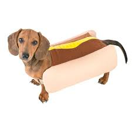

CURIOSIDADES
- Eles podem ter mais de 15 cores e
três tipos de pelagem. Os mais comuns no Brasil são o preto,
o preto com canela, o creme, o vermelho, o marrom, o bege e o azul.
- O maior tamanho de Dachshund pode ser até 3 vezes maior que o tamanho miniatura.
- o “cão salsicha” já ocupou a 10° posição no ranking de cães mais amados no Brasil.
- Einstein adorava um dachshund, assim como Pablo Picasso.
A popularidade da raça na Grã-Bretanha deve-se à Rainha Victória da Inglaterra
(1819 a 1901) que disse: “Nada irá transformar a casa de um homem em um castelo
mais rápido e efetivamente do que um Dachshund.”
- primeiro cão britânico a ser clonado foi um Dachshund chamado Winnie.
